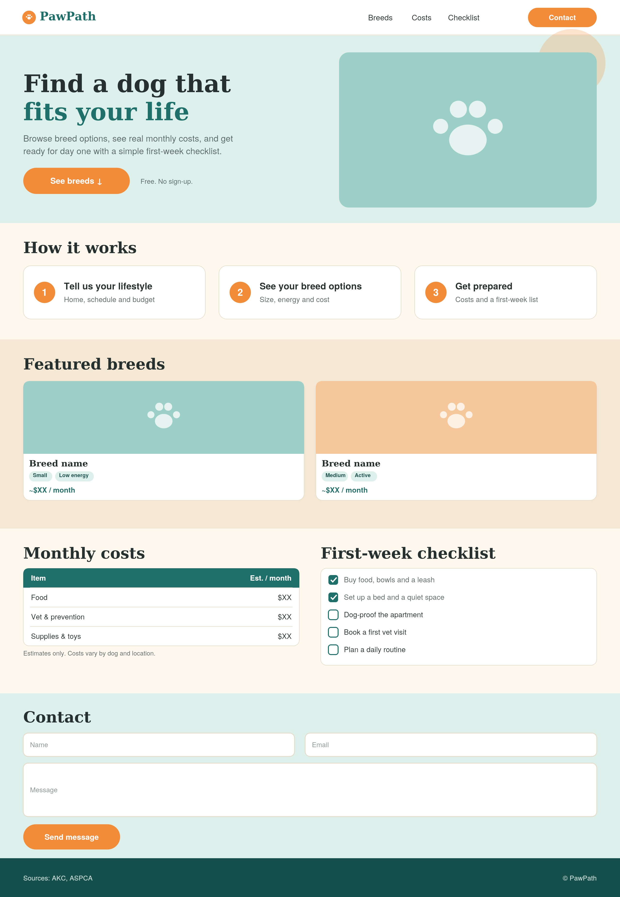
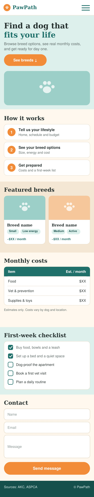

I grew up watching a lot of dogs get taken to the shelter in all the neighborhood I lived in. I would love to help shelter dog find a home to fit your life-style so that you find a real doggy who you will not give up on and keep for as long as they live and not have to give them back to the shelter.
Find Paw Bestfriend is a single-page landing site that pitches a dog breed matching and new-owner guide to first-time dog owners.
The site is one scrolling landing page. The navigation links jump to sections on the same page (for example #breeds and #costs) instead of opening new pages. All content is static, and the only interactivity is the mobile menu, smooth scrolling, and form validation.
The header has the find paw bestfriend logo and links to Breeds, Costs, Checklist, and Contact. On mobile the links collapse into a hamburger menu, and on desktop they sit in a horizontal bar. The header stays visible so visitors can jump to any section at any time.
A short headline, one supporting sentence, a "See breeds" button that scrolls to the breeds section, and one large photo of a dog. It tells a first-time owner what the site offers within a few seconds.
Three short numbered steps explain the idea: tell us your lifestyle, see your breed options, and get prepared. Each step is a single sentence with a number, so visitors can understand the pitch while skimming.
Two breed cards shown side by side, which keeps the page short and easy to skim. Each card has a photo, the breed name, and short labels for size, energy level, and approximate monthly cost. The cards are static and do not link anywhere.
A simple table showing a typical monthly budget for food, vet and prevention, and supplies, with a note that the numbers are estimates. The table will be styled to stay readable on small screens.
A short list of supplies and first-week steps, such as buying food and bowls, setting up a bed, dog-proofing the home, and booking a vet visit. It uses plain HTML checkboxes that visitors can tick while on the page.
A basic form with name, email, and message fields, each with a label. It uses built-in HTML validation (required fields and an email input type) and a clear send button.
A short footer with a line crediting the sources for the information (such as the AKC and ASPCA) and a copyright notice.

